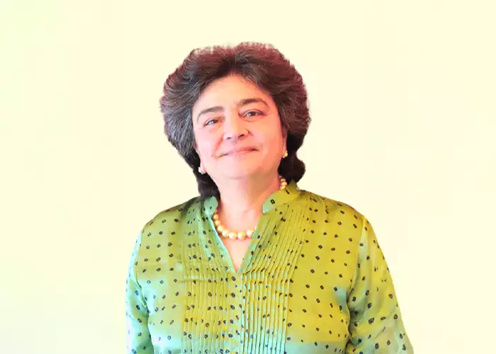
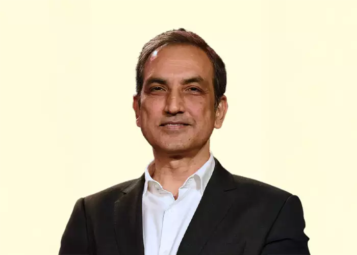
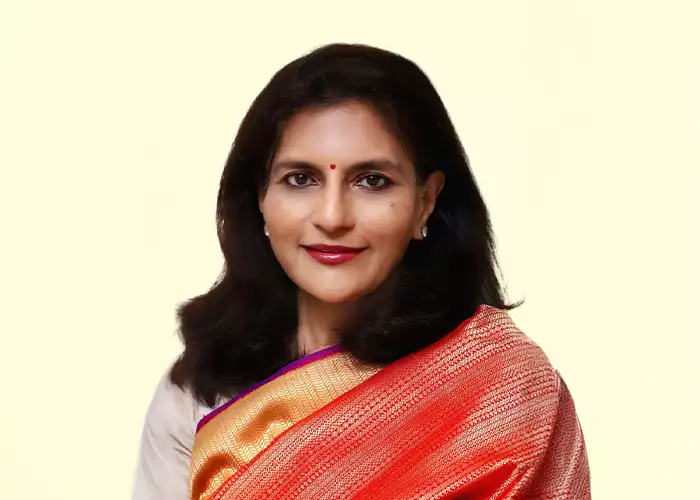
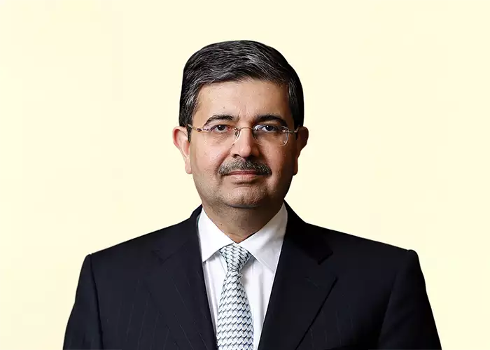

important news

india-russia relationship among the steadiest of major global relations: jaishankar
Noting that the India-Russia relationship is among the "steadiest" of major global relations, External Affairs Minister S Jaishankar on Monday batted for addressing the issue of trade imbalance while enhancing bilateral economic cooperation. Addressing an event attended by Russian Deputy Prime Minister Denis Manturov, Jaishankar said Russia's resources and technology can...
caste census will be benificial for all sections of society: nithish

Supporting the Congress' demand for an up-to-date caste census in the country, Bihar Chief Minister Nitish Kumar on Monday said it would be beneficial for all sections of the society.
The survey report would help the government in better implementation of welfare schemes for the socially and economically disadvantaged groups, the chief minister said.
“We have been in favour of the caste census right from the very beginning. When the central government refused to do so, we decided to conduct the caste survey on our own. It is going on in the state. The exercise will provide data to the government for carrying out works for the benefit of weaker sections of the society”, Kumar told reporters here.
The month-long second phase of caste headcount is underway in Bihar from April 15 to May 15. The enumeration exercise, which started from January 7, will be completed by May.
The Congress is the alliance partner of the ‘Mahagathbandhan' (grand alliance) government in Bihar.
Congress president Mallikarjun Kharge has written to Prime Minister Narendra Modi on April 16 demanding an up-to-date caste census, saying meaningful social justice and empowerment programmes are incomplete in the absence of such a data.
Addressing a rally in Katnataka's Kolar, Congress leader Rahul Gandhi on Sunday dared Prime Minister Modi to release the 2011 caste-based census data in the public domain and also demanded the 50 per cent cap on reservation be removed.
The 50 per cent ceiling refers to Supreme Court judgements pointing out that the overall reservation in government jobs and education for various communities should not breach the mark although there are exceptions with some states crossing the figure.
NCLT approves AM Mining resolution plan for Indian Steel Corporation
The NCLT passed the order on April 13. The total amount under the resolution plan is Rs 897 crores, out of which the secured financial creditors would receive Rs 810 crores

Don’t miss out on the latest developments in business and finance. Let us notify you as they happen.
Not now
I am in
Adani Enterp. 1878.75↑8.00(0.43%)Adani Ports 664.70↑3.05(0.46%)Apollo Hospitals 4386.70↓-11.60(-0.26%)Asian Paints 2843.10↑33.35(1.19%)Axis Bank 864.55↑0.20(0.02%)B P C L 335.70↑3.45(1.04%)Bajaj Auto 4254.35↓-34.00(-0.79%)Bajaj Finance 5961.45↑57.00(0.97%)Bajaj Finserv 1341.15↓-0.15(-0.01%)Bharti Airtel 759.65↓-7.40(-0.96%)Britannia Inds. 4338.60↑74.40(1.74%)Cipla 906.45↓-9.30(-1.02%)Coal India 229.60↑4.10(1.82%)Divi's Lab. 3162.65↓-21.30(-0.67%)Dr Reddy's Labs 4852.30↓-0.60(-0.01%)Eicher Motors 3229.00↑15.95(0.50%)Grasim Inds 1723.65↑22.55(1.33%)H D F C 2742.05↓-44.80(-1.61%)HCL Technologies 1042.20↓-29.65(-2.77%)HDFC Bank 1666.65↓-25.80(-1.52%)HDFC Life Insur. 533.40↑1.55(0.29%)Hero Motocorp 2465.95↑18.90(0.77%)Hind. Unilever 2551.85↑15.65(0.62%)Hindalco Inds. 428.70↑6.65(1.58%)ICICI Bank 901.30↑2.30(0.26%)IndusInd Bank 1124.35↑15.05(1.36%)Infosys 1258.30↓-130.90(-9.42%)ITC 400.15↑4.55(1.15%)JSW Steel 721.20↑0.55(0.08%)Kotak Mah. Bank 1895.15↑25.65(1.37%)Larsen & Toubro 2214.00↓-44.75(-1.98%)M & M 1212.95↑8.40(0.70%)Maruti Suzuki 8674.65↑3.85(0.04%)Nestle India 20244.40↑779.05(4.00%)NTPC 169.60↓-3.45(-1.99%)O N G C 160.15↑1.40(0.88%)Power Grid Corpn 236.65↑5.45(2.36%)Reliance Industr 2367.45↑11.95(0.51%)SBI Life Insuran 1145.35↑15.10(1.34%)St Bk of India 544.00↑11.05(2.07%)Sun Pharma.Inds. 998.70↓-4.80(-0.48%)Tata Consumer 713.20↓-6.40(-0.89%)Tata Motors 472.15↑2.65(0.56%)Tata Steel 107.15↓-0.35(-0.33%)TCS 3139.50↓-49.35(-1.55%)Tech Mahindra 1029.95↓-56.90(-5.24%)Titan Company 2605.60↑19.95(0.77%)UltraTech Cem. 7742.45↑87.20(1.14%)UPL 737.15↑0.15(0.02%)Wipro 361.35↓-6.95(-1.89%)
Home / Companies / News / NCLT approves AM Mining resolution plan for Indian Steel Corporation
NCLT approves AM Mining resolution plan for Indian Steel Corporation
The NCLT passed the order on April 13. The total amount under the resolution plan is Rs 897 crores, out of which the secured financial creditors would receive Rs 810 crores
Ishita Ayan DuttKolkata
ArcelorMittal
2 min read Last Updated : Apr 18 2023 | 12:35 AM IST
Follow Us
Listen to This Article
1xArrow Icon
ArcelorMittal India, on Monday, said that the National Company Law Tribunal (NCLT) had approved AM Mining India’s resolution plan for Indian Steel Corporation (ISC), a Gujarat-based downstream unit. AM Mining is a subsidiary of ArcelorMittal India (AMIPL) and part of the ArcelorMittal and Nippon Steel joint venture.
In a statement, AMIPL said that it looks forward to implementing the recently passed resolution plan in due course.
The NCLT passed the order on April 13. The total amount under the resolution plan is Rs 897 crores, out of which the secured financial creditors would receive Rs 810 crores.
According to information available on the ISC website, the admitted claims of secured financial creditors as on November 2022 was around Rs 2709 crore.
Commenting on the NCLT approval, Dilip Oommen, executive vice president. ArcelorMittal, said that the acquisition would enhance downstream capabilities and broaden the product portfolio as the company looks to capitalise on market opportunities presented by the steel industry, especially in high value-added steel production.
indial climber goes missing at MT annapurna in nepal search operation continues

Don’t miss out on the latest developments in business and finance. Let us notify you as they happen.
Not now
I am in
Adani Enterp. 1878.75↑8.00(0.43%)Adani Ports 664.70↑3.05(0.46%)Apollo Hospitals 4386.70↓-11.60(-0.26%)Asian Paints 2843.10↑33.35(1.19%)Axis Bank 864.55↑0.20(0.02%)B P C L 335.70↑3.45(1.04%)Bajaj Auto 4254.35↓-34.00(-0.79%)Bajaj Finance 5961.45↑57.00(0.97%)Bajaj Finserv 1341.15↓-0.15(-0.01%)Bharti Airtel 759.65↓-7.40(-0.96%)Britannia Inds. 4338.60↑74.40(1.74%)Cipla 906.45↓-9.30(-1.02%)Coal India 229.60↑4.10(1.82%)Divi's Lab. 3162.65↓-21.30(-0.67%)Dr Reddy's Labs 4852.30↓-0.60(-0.01%)Eicher Motors 3229.00↑15.95(0.50%)Grasim Inds 1723.65↑22.55(1.33%)H D F C 2742.05↓-44.80(-1.61%)HCL Technologies 1042.20↓-29.65(-2.77%)HDFC Bank 1666.65↓-25.80(-1.52%)HDFC Life Insur. 533.40↑1.55(0.29%)Hero Motocorp 2465.95↑18.90(0.77%)Hind. Unilever 2551.85↑15.65(0.62%)Hindalco Inds. 428.70↑6.65(1.58%)ICICI Bank 901.30↑2.30(0.26%)IndusInd Bank 1124.35↑15.05(1.36%)Infosys 1258.30↓-130.90(-9.42%)ITC 400.15↑4.55(1.15%)JSW Steel 721.20↑0.55(0.08%)Kotak Mah. Bank 1895.15↑25.65(1.37%)Larsen & Toubro 2214.00↓-44.75(-1.98%)M & M 1212.95↑8.40(0.70%)Maruti Suzuki 8674.65↑3.85(0.04%)Nestle India 20244.40↑779.05(4.00%)NTPC 169.60↓-3.45(-1.99%)O N G C 160.15↑1.40(0.88%)Power Grid Corpn 236.65↑5.45(2.36%)Reliance Industr 2367.45↑11.95(0.51%)SBI Life Insuran 1145.35↑15.10(1.34%)St Bk of India 544.00↑11.05(2.07%)Sun Pharma.Inds. 998.70↓-4.80(-0.48%)Tata Consumer 713.20↓-6.40(-0.89%)Tata Motors 472.15↑2.65(0.56%)Tata Steel 107.15↓-0.35(-0.33%)TCS 3139.50↓-49.35(-1.55%)Tech Mahindra 1029.95↓-56.90(-5.24%)Titan Company 2605.60↑19.95(0.77%)UltraTech Cem. 7742.45↑87.20(1.14%)UPL 737.15↑0.15(0.02%)Wipro 361.35↓-6.95(-1.89%)
Home / Companies / News / NCLT approves AM Mining resolution plan for Indian Steel Corporation
NCLT approves AM Mining resolution plan for Indian Steel Corporation
The NCLT passed the order on April 13. The total amount under the resolution plan is Rs 897 crores, out of which the secured financial creditors would receive Rs 810 crores
Ishita Ayan DuttKolkata
ArcelorMittal
2 min read Last Updated : Apr 18 2023 | 12:35 AM IST
Follow Us
Listen to This Article
1xArrow Icon
ArcelorMittal India, on Monday, said that the National Company Law Tribunal (NCLT) had approved AM Mining India’s resolution plan for Indian Steel Corporation (ISC), a Gujarat-based downstream unit. AM Mining is a subsidiary of ArcelorMittal India (AMIPL) and part of the ArcelorMittal and Nippon Steel joint venture.
In a statement, AMIPL said that it looks forward to implementing the recently passed resolution plan in due course.
The NCLT passed the order on April 13. The total amount under the resolution plan is Rs 897 crores, out of which the secured financial creditors would receive Rs 810 crores.
According to information available on the ISC website, the admitted claims of secured financial creditors as on November 2022 was around Rs 2709 crore.
Commenting on the NCLT approval, Dilip Oommen, executive vice president. ArcelorMittal, said that the acquisition would enhance downstream capabilities and broaden the product portfolio as the company looks to capitalise on market opportunities presented by the steel industry, especially in high va